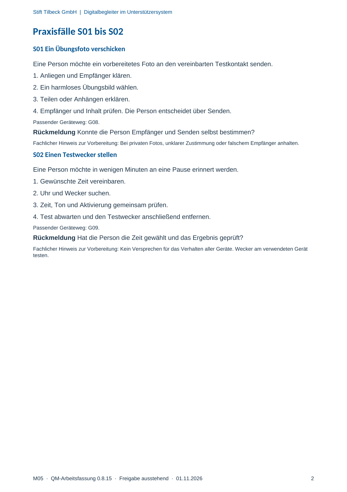

M05 · Originalseite 2
Ein Übungsfoto verschicken
Original-Druckseite mit S01. Auf derselben Seite stehen außerdem S02. Diese sind dadurch keine zusätzliche Aufgabe.
Fragen und Ankreuzfelder werden auf dem Ausdruck bearbeitet. Die Lesefassung speichert keine Antworten.
Lesefassung · Seite 2
Stift Tilbeck GmbH | Digitalbegleiter im Unterstützersystem
Praxisfälle S01 bis S02
S01 Ein Übungsfoto verschicken
Eine Person möchte ein vorbereitetes Foto an den vereinbarten Testkontakt senden.
1. Anliegen und Empfänger klären.
2. Ein harmloses Übungsbild wählen.
3. Teilen oder Anhängen erklären.
4. Empfänger und Inhalt prüfen. Die Person entscheidet über Senden.
Passender Geräteweg: G08.
Rückmeldung Konnte die Person Empfänger und Senden selbst bestimmen?
Fachlicher Hinweis zur Vorbereitung: Bei privaten Fotos, unklarer Zustimmung oder falschem Empfänger anhalten.
S02 Einen Testwecker stellen
Eine Person möchte in wenigen Minuten an eine Pause erinnert werden.
1. Gewünschte Zeit vereinbaren.
2. Uhr und Wecker suchen.
3. Zeit, Ton und Aktivierung gemeinsam prüfen.
4. Test abwarten und den Testwecker anschließend entfernen.
Passender Geräteweg: G09.
Rückmeldung Hat die Person die Zeit gewählt und das Ergebnis geprüft?
Fachlicher Hinweis zur Vorbereitung: Kein Versprechen für das Verhalten aller Geräte. Wecker am verwendeten Gerät
testen.
Originalseite ansehen
